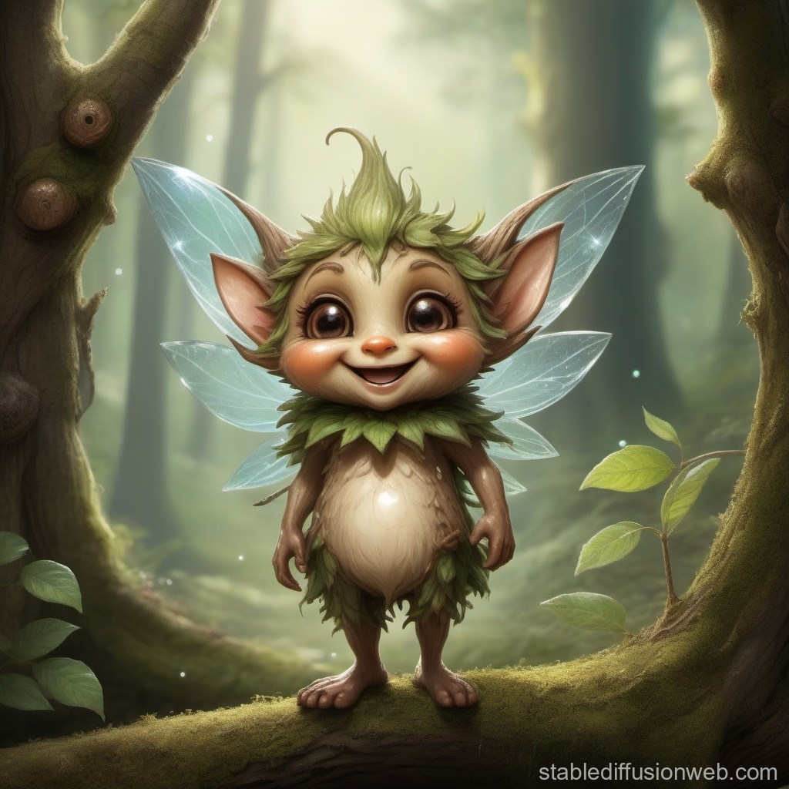

As you continue along the path, you feel a sense of anticipation building within you. The flickering lights guide your way, casting a warm glow over the forest around you. Just when you least expect it, you come upon a clearing bathed in gentle moonlight.
There, sitting atop a moss-covered log, is a curious creature—a friendly woodland sprite with sparkling eyes and a mischievous grin. Its presence fills you with an inexplicable sense of comfort and joy.

CHOOSE A PATH